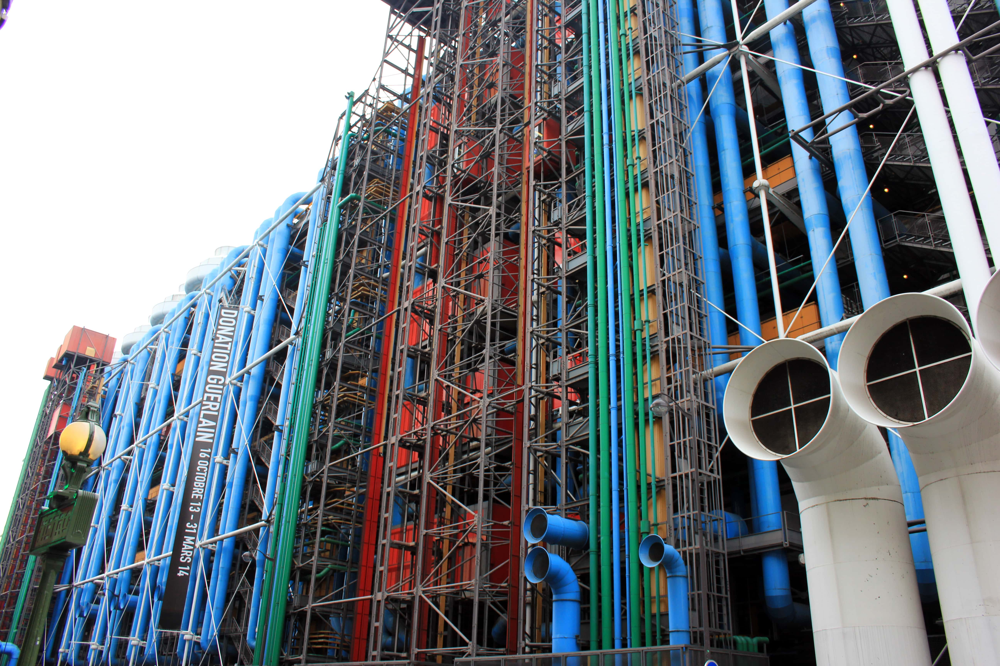

Autocensure
Pourquoi se censure-t-on vis à vis du Centre Pompidou ?
Commençons tout d’abord par donner une définition de l’autocensure. L’autocensure est l’acte par lequel une personne se censure elle-même anticipant une censure présumée. Par exemple l’autocensure vis à vis de l’art peut être interpréter par le fait qu’une personne se dise qu’elle n’éprouve pas un intérêt pour l’art et donc pour cette raison ne s’y intéresse pas et ne cherche pas à en apprendre sur ce thème.
Nombreuses sont les activités qui peuvent entraîner l’autocensure vis à vis du Centre Pompidou.
En effet le Centre Pompidou présente un grand musée d’art moderne et contemporain qui n’est pas forcément plaisant pour tout le monde et qui décourage donc ces personnes à le visiter.
De plus cette architecture originale très surprenante ne plaît pas à tout le monde et fais parfois même penser à une usine ce qui n’est pas très attrayant.
